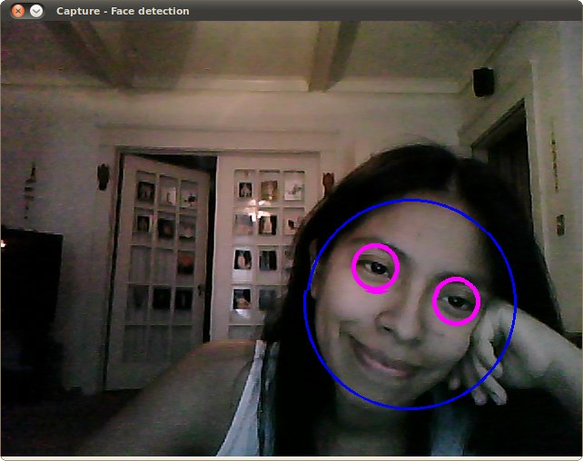

Cascade Classifier
Goal
In this tutorial you will learn how to:
- Use the cv::CascadeClassifier class to detect objects in a video stream. Particularly, we will use the functions:
- cv::CascadeClassifier::load to load a .xml classifier file. It can be either a Haar or a LBP classifer
- cv::CascadeClassifier::detectMultiScale to perform the detection.
Theory
Code
This tutorial code’s is shown lines below. You can also download it from here
#include "opencv2/objdetect.hpp" #include "opencv2/videoio.hpp" #include "opencv2/highgui.hpp" #include "opencv2/imgproc.hpp" #include <iostream> #include <stdio.h> using namespace std; using namespace cv; void detectAndDisplay( Mat frame ); String face_cascade_name, eyes_cascade_name; CascadeClassifier face_cascade; CascadeClassifier eyes_cascade; String window_name = "Capture - Face detection"; int main( int argc, const char** argv ) { CommandLineParser parser(argc, argv, "{help h||}" "{face_cascade|../../data/haarcascades/haarcascade_frontalface_alt.xml|}" "{eyes_cascade|../../data/haarcascades/haarcascade_eye_tree_eyeglasses.xml|}"); cout << "\nThis program demonstrates using the cv::CascadeClassifier class to detect objects (Face + eyes) in a video stream.\n" "You can use Haar or LBP features.\n\n"; parser.printMessage(); face_cascade_name = parser.get<string>("face_cascade"); eyes_cascade_name = parser.get<string>("eyes_cascade"); VideoCapture capture; Mat frame; //-- 1. Load the cascades if( !face_cascade.load( face_cascade_name ) ){ printf("--(!)Error loading face cascade\n"); return -1; }; if( !eyes_cascade.load( eyes_cascade_name ) ){ printf("--(!)Error loading eyes cascade\n"); return -1; }; //-- 2. Read the video stream capture.open( 0 ); if ( ! capture.isOpened() ) { printf("--(!)Error opening video capture\n"); return -1; } while ( capture.read(frame) ) { if( frame.empty() ) { printf(" --(!) No captured frame -- Break!"); break; } //-- 3. Apply the classifier to the frame detectAndDisplay( frame ); char c = (char)waitKey(10); if( c == 27 ) { break; } // escape } return 0; } void detectAndDisplay( Mat frame ) { std::vector<Rect> faces; Mat frame_gray; cvtColor( frame, frame_gray, COLOR_BGR2GRAY ); equalizeHist( frame_gray, frame_gray ); //-- Detect faces face_cascade.detectMultiScale( frame_gray, faces, 1.1, 2, 0|CASCADE_SCALE_IMAGE, Size(30, 30) ); for ( size_t i = 0; i < faces.size(); i++ ) { Point center( faces[i].x + faces[i].width/2, faces[i].y + faces[i].height/2 ); ellipse( frame, center, Size( faces[i].width/2, faces[i].height/2 ), 0, 0, 360, Scalar( 255, 0, 255 ), 4, 8, 0 ); Mat faceROI = frame_gray( faces[i] ); std::vector<Rect> eyes; //-- In each face, detect eyes eyes_cascade.detectMultiScale( faceROI, eyes, 1.1, 2, 0 |CASCADE_SCALE_IMAGE, Size(30, 30) ); for ( size_t j = 0; j < eyes.size(); j++ ) { Point eye_center( faces[i].x + eyes[j].x + eyes[j].width/2, faces[i].y + eyes[j].y + eyes[j].height/2 ); int radius = cvRound( (eyes[j].width + eyes[j].height)*0.25 ); circle( frame, eye_center, radius, Scalar( 255, 0, 0 ), 4, 8, 0 ); } } //-- Show what you got imshow( window_name, frame ); }
Explanation
Result
Here is the result of running the code above and using as input the video stream of a build-in webcam:

Be sure the program will find the path of files haarcascade_frontalface_alt.xml and haarcascade_eye_tree_eyeglasses.xml. They are located in opencv/data/haarcascades
This is the result of using the file lbpcascade_frontalface.xml (LBP trained) for the face detection. For the eyes we keep using the file used in the tutorial.
